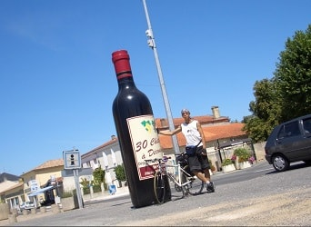
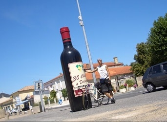
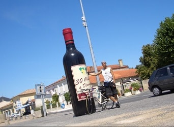

日誌、部落格
http://blog.deray.org
單車-環日本(2015年)
http://derayga.github.io/nippon
機車-環北海道(2014年)
http://blog.deray.org/hokkaido/
單車-西藏：青藏線(2013年)
http://derayga.github.io/tibet
背包-火車環法國(2012年)
http://derayga.github.io/franceWithMisasa
單車-北京到巴黎(2007年)
http://derayga.github.io/btp
背包-京都、大阪(2006年)
http://derayga.github.io/kyoto

單車-環法國(2005年)
http://derayga.github.io/france
單車-環台(2003年)
http://bicycle.deray.org


 
